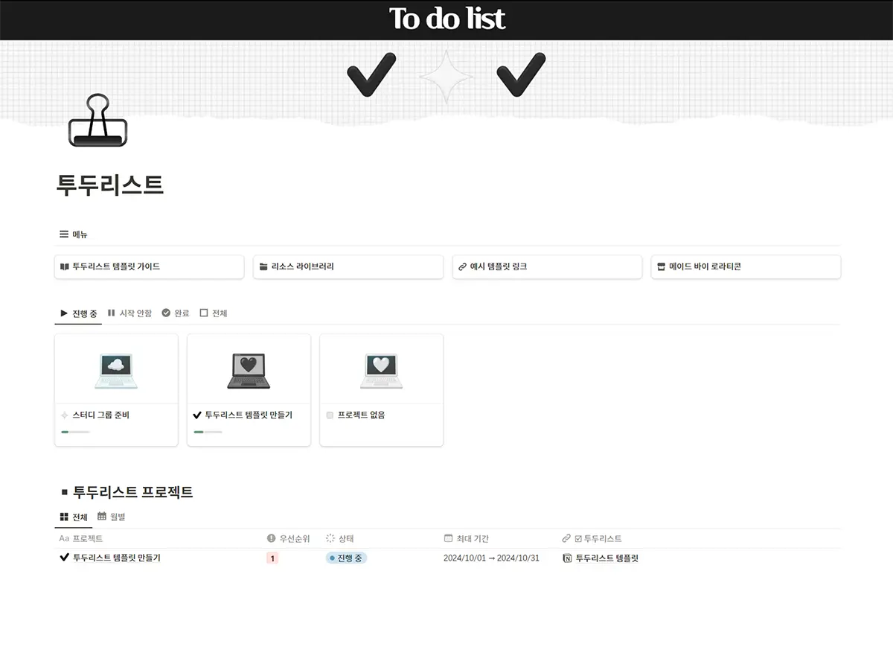
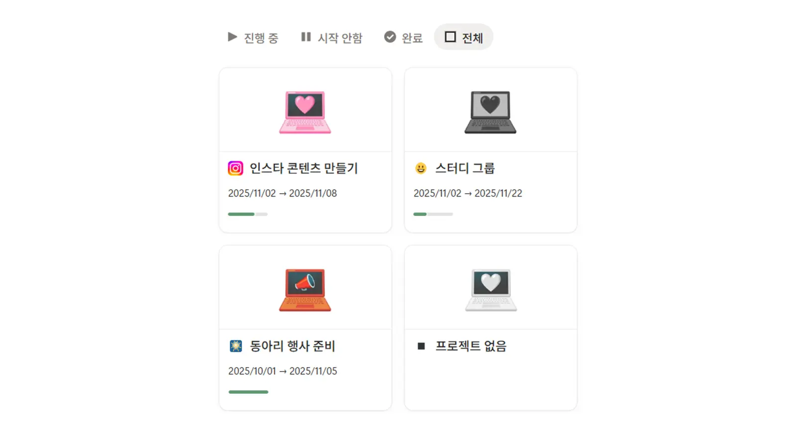
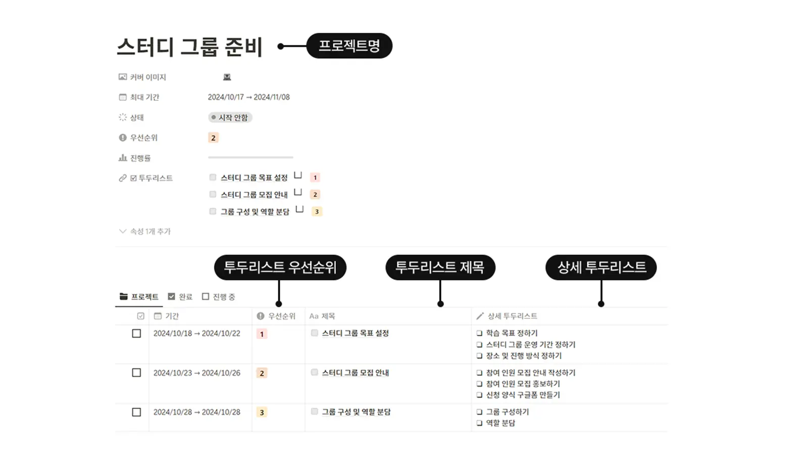
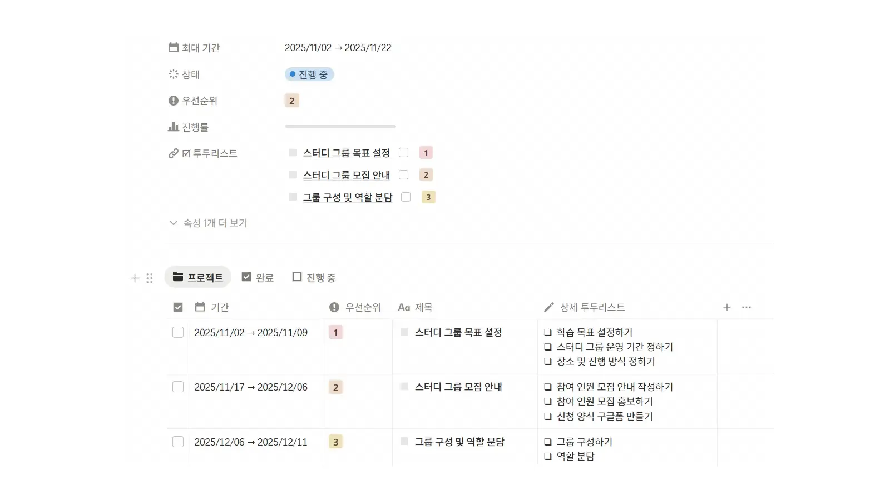

투두리스트 템플릿
여러 프로젝트의 할 일을 한 곳에서! 업무부터 개인 목표까지 체계적으로 정리해 보세요.
일반적인 체크리스트를 넘어, 작업 단위를 명확하게 나누고 진행률을 한눈에 파악할 수 있습니다.

데스크톱, 태블릿에서 쉽게 사용해 보세요.
이런 분들에게 도움이 될 수 있어요
주요 기능

한눈에 들어오는 프로젝트 관리
프로젝트별로 기간과 업무 상태를 지정해 보세요.
15종의 무료 커버 이미지를 적용해서 프로젝트를 시각적으로도 구분할 수 있어요.

세분화된 할 일 & 우선순위 지정
하나의 프로젝트 내부에 세부적인 투두리스트를 체계적으로 추가할 수 있습니다. 우선순위(1~20) 속성을 설정하면 가장 먼저 처리해야 할 업무가 자동으로 정렬됩니다.

자동 계산되는 진행률
세부 할 일을 완료 체크할 때마다
전체 프로젝트의 달성률이 실시간으로 차오릅니다.
시각적인 성취감을 통해 업무 능률을 확실하게 올려보세요.
템플릿 사용 가이드 제공
노션이 처음이신가요?
복제 방법부터 상세한 사용법까지 친절하게 설명된
가이드북 페이지가 템플릿 내부에 포함되어 있습니다.
걱정 말고 시작하세요!
먼저 사용해본 분들의 리뷰
자주 묻는 질문 (FAQ)
다운로드 전 궁금하신 점을 미리 확인해 보세요.
Q. 템플릿 복제는 어떻게 하나요?
다운로드 받으신 PDF 파일을 열고, 첫 번째 버튼을 클릭하면 템플릿 페이지로 바로 이동합니다. 노션(Notion)에 로그인하신 후, 우측 상단에 있는 '복제(Duplicate)' 아이콘을 클릭하시면 내 워크스페이스로 즉시 복사됩니다.
더 자세한 과정이 궁금하시다면 아래 버튼을 눌러 네이버 블로그의 상세 가이드를 확인해 보세요!
Q. 노션 무료 요금제에서도 사용 가능한가요?
Q. 상업적 용도로 사용할 수 있나요?
이 템플릿과 관련된 글을 읽어보세요
템플릿과 관련된 유용한 꿀팁과 사용기들을 확인할 수 있어요✨